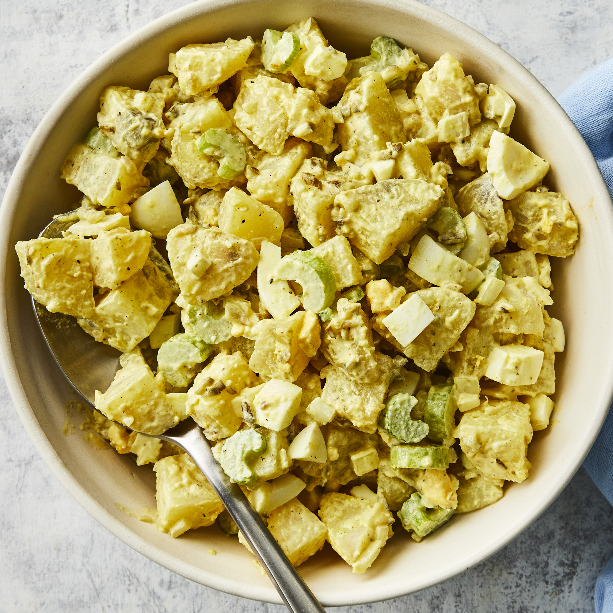

Potato Salad

Description
There are many ways to make potato salad, but if youre looking for a traditional, mayonnaise-based potato salad made with hard-boiled eggs, celery, and a little pickle relish for zing, youve landed on the right recipe. With more than one thousand ratings and nearly a thousand reviews from our Allrecipes community of home cooks, this recipe for Old-Fashioned Potato salad is a proven winner. And its so easy to make using everyday ingredients. Ill show you how to make Old-Fashioned Potato salad, with loads of tips all along the way. Plus, Ill share tips for storing and freezing potato salad. (Yes, you can freeze potato salad!)
Ingredients
- Potatoes
- Eggs
- Celery
- Onion
- Relish
- Mayonnaise
- Mustard
- Seasonings
Steps
- Bring a large pot of salted water to a boil. Add potatoes and cook until tender but still firm, about 15 minutes. Drain, cool, peel and chop.
- While potatoes cook, place eggs in a saucepan and cover with cold water. Bring water to a boil; cover, remove from heat, and let eggs stand in hot water for 10 to 12 minutes. Remove from hot water, cool, peel and chop.
- Combine the potatoes, eggs, celery, onion, relish, mayonnaise, mustard, garlic salt, celery salt, and pepper in a large bowl. Mix together well and refrigerate until chilled.